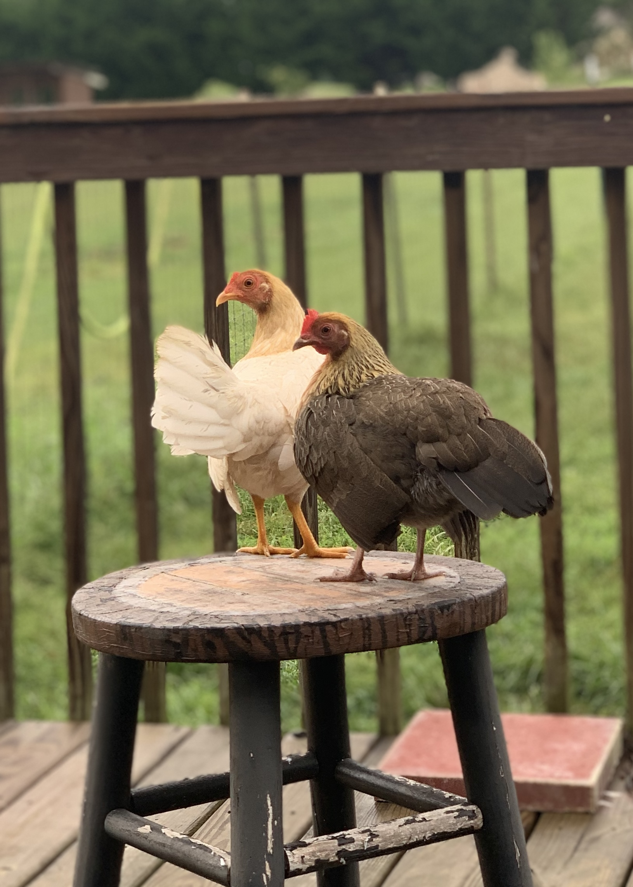
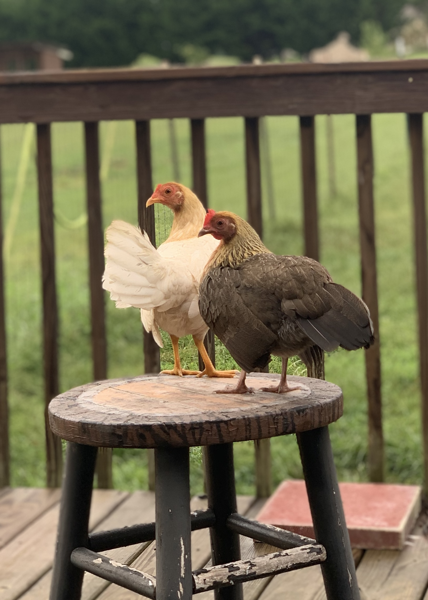
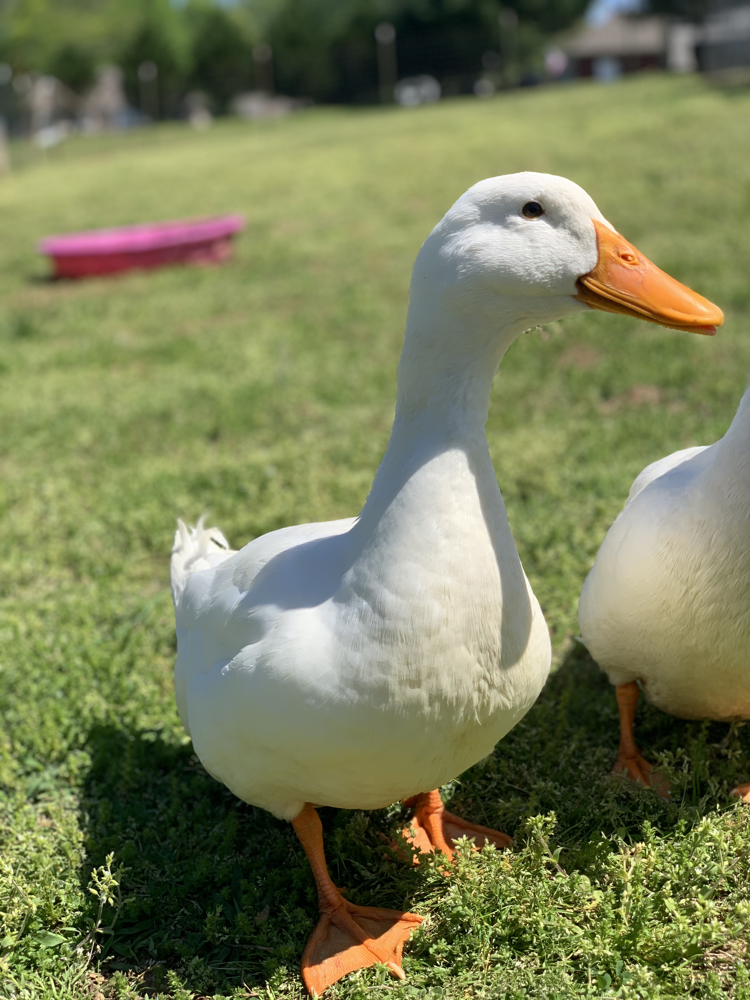
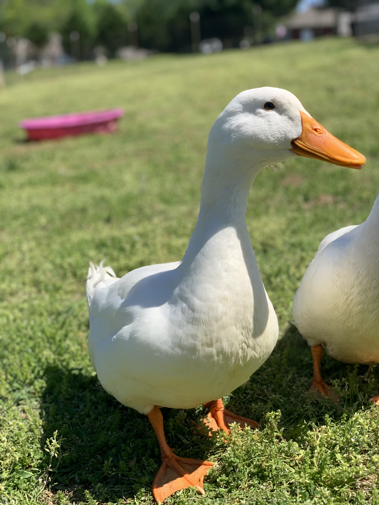
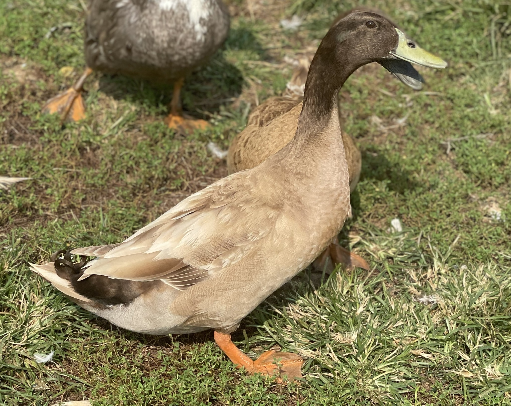
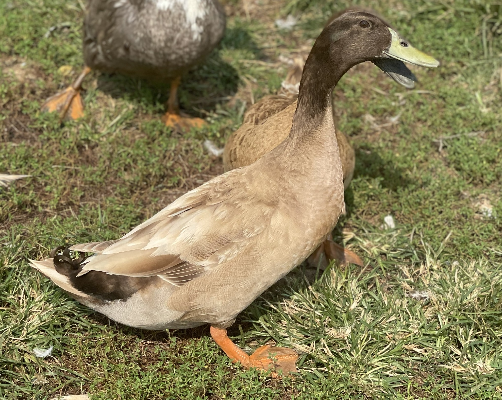

Chickens
Chickens require the least maintenance of the flock. They run down our hill
when they see us come outside, flapping their wings, gliding down, sometimes
to flight. We let them roam freely within our backyard fenced in area. The
rooster protects them by alerting for hawks and finds them food by
scratching and foraging. You never want more than 1 rooster per half a dozen
hens or so, or else they'll fight, but you want them around for their great
defensive properties.
Barred Rock
Is what we call them in Tennessee, their full name is
Plymouth Rock. They are
black with
white
spots and stripes. Very sweet chickens, definitely one the smarter types,
one of ours has learned to climb our goat fence by hooking her feet into the
second to last top rows and hopping over to get more food outside our fence.
She's smart enough to get back in when she wants as well.
Female Baby
 Female Adult
Female Adult

Bantam
Tiny chickens! The
Bantam are cute
and routinely jump through our gate door. They come in different color
feathers, ones we've had were
yellow/
white
and
brown.
Their eggs are tiny, about half as big as regular chicken eggs, but still
just as good. Will be the lowest on the pecking order if left with their
bigger-sized flock.
Female Baby
 Female Adult

Female Adult

Ducks
Ducks were our second flock type, they quickly became my favorite because
they greet you with large motioning tail wagging and happy loud quaking. I
tend to quack back at them or make excited sounds and they perk up very
fast. They love it when they have a clean water pond to clean themselves and
play. An easy way to tell between male and female are their quacks. Drakes
will make a neutral sound that sounds more guttural, think Donald Duck.
Females make the onomatopoeia
*quack* sound. Males also sometimes
have a curled back feather and broader heads.
American Pekin
American Pekins
are probably what you think of when you think of a duck, considering how
well-known Donald Duck is. They are a sleek
white color,
that when comparing their feather in front of a snowy background, have a
yellowish
tint.
Male and Female Babies
 Donald - Male Adult

Donald - Male Adult

Khaki Campbell
Khaki Campbell
Are the other type of duck that may come to mind easily, they're usually a
mix of colors of
brown,
green,
tan, and
white.
Baby
 Randy - Male Adult (notice the curly tail!)

Randy - Male Adult (notice the curly tail!)

Blue Sweedish
They're definitely a hue of blue!
Swedish Blue
Female Babies